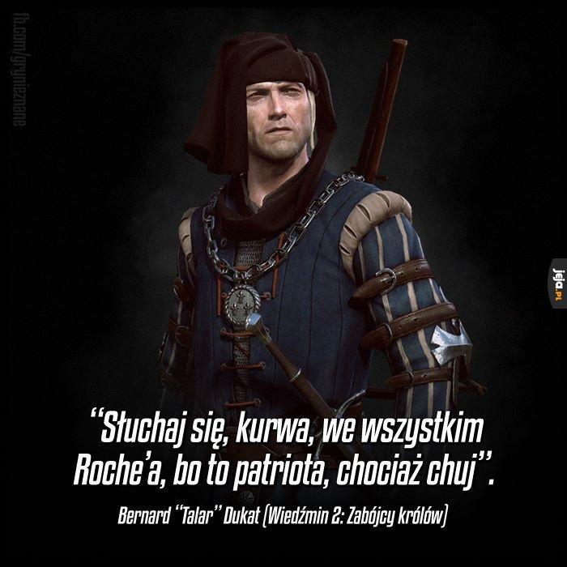

Na umilenie wideło poniżej
Pierwszą rzeczą, którą warto wspomnieć przy przybliżeniu wymienianej w całej pracy postaci jest to
że ona jest odpowiedzialny za pacyfikację Podgórza Mahakamskiego
Dobrze też powiedzieć o 2-krotnym odznajczeniu w boju owej postaci za męstwo w boju.
Należy też napomnieć o opcjonalnym (w zależności od fabuły) uczestnictwie w bitwie pod Kaer Morhen.
Resztę można zawrzeć w dalszej części.
Taki fajny cytat----->
